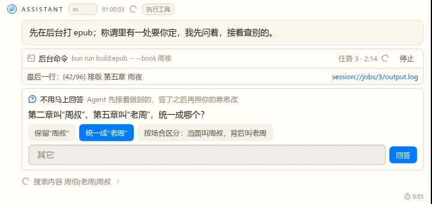
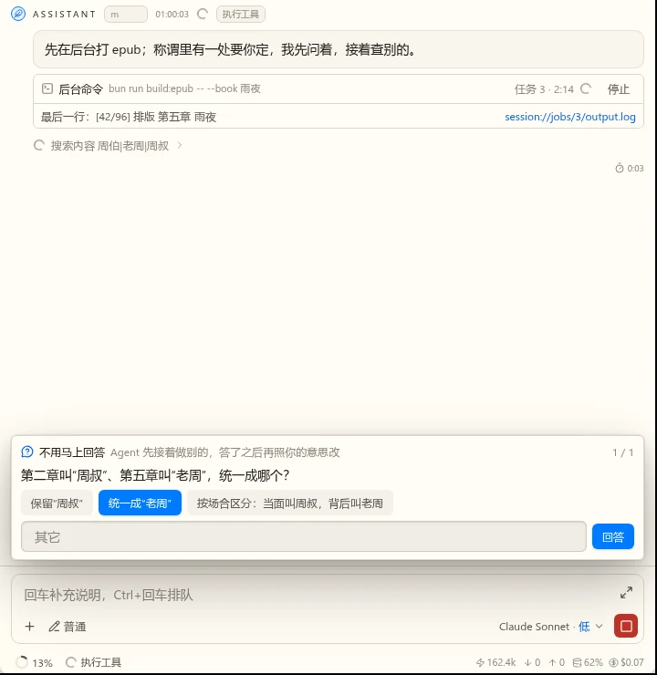
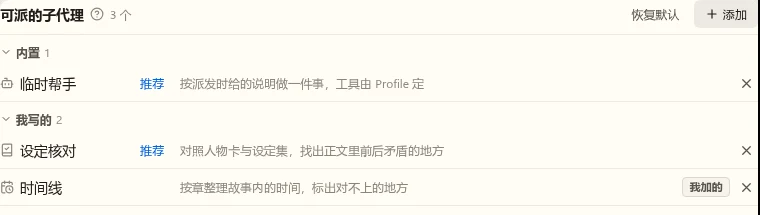
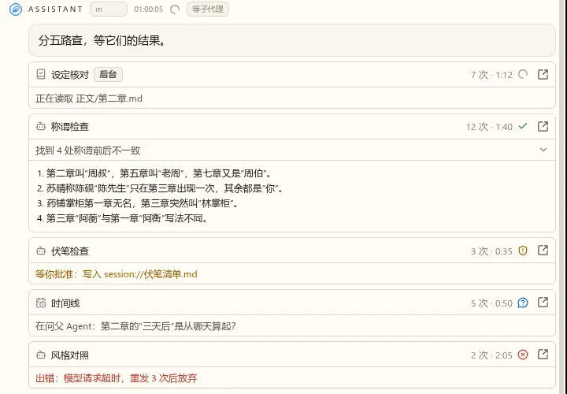

都是静态稿：真实的对话视图和 nb-ui 组件，新加的部分是草稿，数据是写死的样本。第 3 轮是剩下的几样：异步提问放哪、会话面板怎样嵌套，再请你过一眼“可派的子代理”设置和后台命令卡片。这一轮定了，界面就齐了，接着写实施计划。
ask 带 async）放在哪已定：异步提问不让运行停下，Agent 接着做别的；回答只经卡片，输入框里打的字一律是普通输入（插话或排队）。问题会留到你回答为止，跨过这一轮也还在。

在 Agent 提问的地方，前因后果看得清。但 Agent 接着往下写，卡片很快被顶上去；跨轮之后要往回翻才找得到。

在审批向导的位置，但不替换输入框，输入框照常能用；一直看得到，几个问题时标“1 / 2”翻看。能像向导一样收成一条小条。消息流里那次调用只留一行。
已定：子会话嵌在父会话下，默认收起；搜索命中子会话时展开它的父会话。图里“第三章全面检查”展开着，“大纲梳理”收着。子会话的行和普通会话一样两行、等高，状态照常显示。
个数与状态写得全；有子会话的父会话多占一行。
所有行一样高；左边折叠箭头，第二行右边写个数。子会话的状态在展开后看，父会话自己的状态照常显示。

和工具一节同一个样子，放在工具一节下面：按来源分组，一行一个 Profile，标出 Profile 声明的“推荐”，你自己加的标“我加的”；“添加”打开和添加工具一样的对话框，“恢复默认”回到 Profile 声明的那份。推荐不能在这里改。
shell 带 async）看上图的第一张卡：卡头是命令、任务号与用时、停止按钮；下面一行运行中是最后一行输出，结束后是退出码和行数，右边是输出文件。高度固定，和子代理卡片一个道理。“停止”是你在界面上停它，Agent 用 kill。
选了 C 的样子，但不合成一组：每次派发一张卡，卡头是名字和状态，下面一行进度；几张卡上下排着。卡片高度不随文字变：进度和结果第一句都只占一行，不自动展开；点开看结果全文时，全文区限高、在区内滚动（图里“称谓检查”是点开的）。
